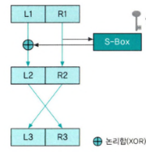

존 매카시: AI라는 용어를 처음 사용한 사람DES 알고리즘 암호화: 64비트의 블록 암호화, 56 비트 암호화 키모노 알파베틱 암호화: 26!PAA: 정책 승인 기관 (최상위 기관)커베로스: 클라이언트, 서버, SSO금융 보안에 주요기술: 전자서명, 전자봉투
암호화
최초의 암호: 기원전 480년 데마라토스암호화 방식:전치법: 단순히 메시지에 들어가있는 문자 위치 바꿈대체법: 글자를 다른 글자로 대체하여 암호화 함
단일 치환 암호화
키워드를 몰라도 복호화가 가능함 빈도 분석법으로 복호화가 가능
시저 암호화: 알파벳 3자를 오른쪽으로모노 알파베틱 암호화: 알파벳 과 암호키를 대칭시킴
다중 치환 암호화
암호화 키와 매핑에 따라 알파벳 하나가 여러 가지 다른 알파벳으로 대체되는
비즈네르 암호화
비즈네르 표를 참고하여 암호화 진행함
- 평문에 글자를 비즈네르 표에 가로
- 암호키에 글자를 비즈네르 표에 세로
- 만약 암호 키가 평문보다 작은경우 처음부터 쓰면됨
secret is beautiful→secret is beautiful secret is...
- 복호화는 반대로 일반 평문을 세로, 암호키를 가로
플레이페어 암호화
- 만약 두 문자가 같은 열(세로)에 위치 한다면:
- 각 문자에 대해 아래 값으로 대체:
AK→UO - 복호화에 경우 위 값으로
- 각 문자에 대해 아래 값으로 대체:
- 만약 두 문자가 같은 행(가로)에 위치한다면:
- 각 문자에 대해 오른쪽 값으로 대체
RD→OB - 복호화에 경우 왼쪽 값으로
- 각 문자에 대해 오른쪽 값으로 대체
DES 알고리즘 암호화
0, 1 의 이진 데이터를 암호화 하는 알고리즘

- R1을
S-Box취한 뒤 L1 하고 XOR(둘이 다르면 1) 연산을 한게 L2 - R1 그대로 R2
- R2=L3, L2=R3
S-Box 방법
R1: 1011 1100 0111
L1: 1010 0110 1101
- R1 확장
-
양옆에 이웃 이랑 구분
# 양옆이웃 원본 11 1011 | 10 1100 | 01 0111
-
- S-Box 표에서 참고
-
가로: 원본 -
세로: 이웃14 | 3 | 1 = 0100 0110 1100
-
- 이제 L1 이랑 XOR 연산하면 그게 L2 임
비대칭 암호화
RSA 암호화
암호화, 복호화에 사용되는 키가 서로 같지 않음
- 평문 → 1번 개인키로 암호화 → 1번 공개키로 복호화 → 평문
장점
- 자신에 개인키로 암호화된 평문은 자신의 공개키로 밖에 열 수 없음
해시
8e1463fa1cba3c0713b7777d4f3b9961
- 하나의 문자열을 더 짧은 길이의 값이나 키로 변환한 것
- 정보 위, 변조를 확인하기 위한 수단
- 대표적인 알고리즘: MD5, SHA
특징
- 어떤 문자를 넣어도 문자의 길이는 같다
- 문자 하나만 달라저도 전혀다른 해시값이 나온다
- 사실상 복호화가 거의 불가하다
기타 암호화 알고리즘
대칭AES 알고리즘: DES 알고리즘을 새롭게 개발한 것SEED 알고리즘: 한국 전자상거래 등에서 쓰기위해 만든 국내 암호화 알고리즘ARIA 일고리즘: 전자정부 구현- IDEA, RC5, Skipjack, LEA
비대칭- LFSR
전자상거래 보안
공개키 인증 기관 (CA)
- ==
PAA: 정책 승인 기관 (최상위 기관)== PCA: 정책 인증 기관, Root CA 인증서 발급 및 기본 정책 수립CA: 인증서 발급과 취소 등의 실질적인 업무 담당RA: 등록기관 공인인증서 인증 요청을 확인하고 CA 간 인터페이스 제공
전자 서명
서명자가 해당 전자 문서에 서명하였음을 나타내기 위한 기술
- 공개키 방법을 사용하여 복호화된 해시 값이 편지에서 구한 해시값과 일치하면 위조가 아니라고 판단
기능
- 위조 불가, 인증, 재사용 불가, 변경 불가, 부인방지
전자 봉투
전달하려는 메시지를 암호화하여 한 사람을 통해 보내고 암호화 키는 다른 사람이 가져가도록 암호학적 으로 구현
- 기밀성, 무결성, 부인방지
SET
비자, 마스터카드의 표준 프로토콜
이중 서명: 신용 카드 구매정보, 지불정보 해시값을 합쳐서 또 다른 해시값을 생성 하여 그걸 개인키로 암호화 함
네트워크 암호화
2계층PPTP: MSL2TP: 시스코
3계층:- IPSec
4계층:- SSL
기타 암호화
PGP: 그물망, 전자 우편 암호화 방식S/MIME: 인증서를 통해 암호화한 이메일 서비스를 제공스테가노그래피: 미리 정한 약속에 따라 특정 데이터와 전혀 연관없는 데이터로
보안 시스템
SSO
시스템이 몇대라도 한 시스템에서 인증 받으면 다른 시스템에 모든 접근 권한을 받는
- 클라이언트가 불특정 자사 서비스에 접근하면 SSO 인증서버에 먼저 요청해서 인증을 받고
- 접속하려는 서비스에 접근 시켜줌
방화벽
신뢰하지 않는 외부 네트워크와 내부 네트워크에 사이를 지나는 패킷에 미리 정한 규칙에 따라 허용/비허용을 결정 하는
접근 제어
- 관리자가 통과시킬 접근과 거부 접근 선택
- IP, 포트 번호로 구성
룰셋 이상현상
음영 이상:- 순위가 높은 정책이 순위가 낮은 정책을 포함하고 처리 결과가 다른 경우
연관이상:- 두 개의 정책이 각기 다른 조건에 대해 서로 포함하는 경우
일반화 이상:- 순위가 낮은 정책이 순위가 높은 정책을 포함하고 처리 결과가 다른 경우
중복 이상:- 순위에 관계없이 두 개의 정책 중 하나가 어느 다른 하나의 정책에 포함되고 처리 결과가 같은 경우
마침조 이상:- 어떠한 패킷도 방화벽 정책에 필터링 되지 않은 경우
한계
- 바이러스에 경우 파일 감염 방식이라 효과가 미비 하고
- 웜에 경우 정상적 서비스 포트에 대한 공격은 막기 힘듬
침입 탐지 시스템
내부에 해킹이나 악성 코드 활동 탐지와 같이 방화벽이 하지 못하는 일 수행
종류
호스트 기반 침입 탐지 시스템 (HIDS)
- 운영체제에 부가적 프로그램으로 설치
네트워크 기반의 침입 탐지 시스템 (NIDS)
- 네트워크에서 하나의 독립된 시스템으로 운영
침입 탐지 기법
오용탐지 기법:- 이미 발견되고 정립된 패턴을 미리 기록하여 해당 패턴이 탐지되면 알림’
상태 전이 기법:- 공격 상황에 대한 시나리오를 작성하여 상태에 따른 공격 분석
이상탐지 기법:- 정상적인 상태에서 급격한 변화가 일어나면 알려주는 것
침입 방지 시스템
- 침입 탐지 시스템 + 방화벽
NAC
IP 관리 시스템
- 접근 제어, 인증
- PC 네트워크 장치 통제
- 해킹 차단
구현 방식
인라인 방식:- 방화벽과 같은 방식으로 접근 차단
- GW 처럼 네트쿼크 앞에 NAC 장치를 추가하는 법
802.1x 방식:- 802.1x 를 지원하는 스위치와 RADIUS 서버 이용
VLAN 방식:- 인가받지 않는 사용자는 통신이 되지 않는 VLAN에 라우팅하고
- 인증받으면 통신가능한 VLAN에 라우팅 되게
ARP 방식:- 신규 접속자가 적합한 사용자여만 ARP로 MAC주소를 알릴 수 있게
- 그렇지 않으면 쓰레기 MAC 주소를 리턴
소프트웨어 에이전트 방식:- 네트워크에 접속하려는 모든 클라이언트에 특수 에이전트 프로그램을 설치 하는 것
- 서버에 차단 정책을 설치해서 설치된 클라이언트로 차단
스팸 필터 솔루션
메일 해더 필터링:- 보내는 사람, 도메인 등 특정 내용이 포함되어있는지 판단
제목 필터링:- 메일을 이용한 웜 공격은 제목에 특수 문자열이 있는 경우가 있어 그걸 검사
본문 필터링:- 본문 내용에 특정 단어가 포함되어있는지 검사
첨부파일 필터링:- 이름, 크기, 개수, 파일 이름 길이 등 검사
DRM
- 문서에 열람, 편집, 인쇄에 접근 권한을 제한
IOT & AI 공격
AI 공격
데이터 변조 공격
회피 공격:- 학습 과정에서 오류가 존재하는 노이즈를 고의적으로 추가
중독 공격:- 악의적인 데이터를 주입해서 시스템이 오작동을 하게 하는
전도 공격:- 인공지능에 수많은 쿼리를 통해 산출 결과를 분석해 추출
네트워크 침입 탐지
전문가 시스템:- 응용분야 지식및 능력을 잘 조직해서 비전문가도 전문가에 상응하는 능력발휘할 수 있게 도움을 주는 시스템
오탐률:- 거짓 양성, Type 1 에러: 실제로는 공격이 아닌데 공격이라고 탐지하는 것
- 거짓 음성, Type 2 에러: 공격을 받았으나 이를 탐지하지 못하는 것
포랜식
CERT
컴퓨터 관련 침해 사고에 대응하기위해 만든 솔루션
위험등급
1등급:- 분산 서비스 공격등으로 정상동작이 불가한 상태
2등급:- 비 인가자에 의해 관리자 명령어가 실행됨
3등급:- 외부 또는 내부에서 취약점 수집 행위가 계속 발견
절차
- 사전 대응 → 침해 사고 대응 → 사고 탐지 → 대응 → 제거 및 복구 → 후속조치
디지털 포렌식
디지털 환경에 장비를 이용하여 디지털 증거 자료를 수집, 분석 하는 기술
증거
전문증거:- 전문 법착을 따르지만, 실험자가 직접 진술하지 않고 실험 결과를 타인이 전달받아 재진술 하는 형태
증거 개시 제도:- 미리 제시하지 않은 증거는 법정에서 원칙적으로 사용하지 못하도록 하는 제도
원칙
정당성의 원칙: 적법한 절차를 거쳐야만 증거로 인정재현의 원칙:같은환경에서 같은 결과가 나오도록신속성의 원칙: 메모리 같이 휘발성으로 인해 신속하고 정확하게 수집해야 함연계 보관성의 원칙: 이송, 보관, 분석, 법정제출 이라는 과정이 명확해야함무결성의 원칙: 위, 변조 되면 안됨
보안 관리
보안 거버넌스
조직의 보안을 달성하기 위한 구성원 간의 지배구조
최고 보안책임자(CSO)가 있음
구현 요건:- 가치전달, 자원관리, 위험관리, 성과 측정, 전략적 연계
보안 조직 구성 시 고려사항:- 기업에 크기, 시스템 환경, it 예산
영미권 보안정책
Security Policy: 보안 활동에 알반적인 사항, 조직의 상위 관리자가 만듬Standards: 소프트웨어나 하드웨어에 일반 운영 규칙Baselines: 조직에서 지켜야할 가장 기본Guidelines: 하고자 하는 일에Standards가 없을경우Procedures: 각 절차의 세부 내용
접근 모델
임의적 접근 모델: 정보 소유자가 정보의 보안 레벨을 결정하고 접근 제어 설정 가능강제적 접근 제어 모델: 중앙에서 정보 수집 분류RBAC: 직책이 바뀌면서 불필요한 권한을 가지는 것
벨-라파둘리 모델
최초의 수학적 모델 정보의 기밀성에 따라 상하 관계가 구분된 정보를 보호
읽기 권한: 자신보다 낮은 수준에 문서만쓰기 권한: 높은 문서 쓰기 낮은 문서 쓰기 없음
비버 모델
정보의 무결성을 높일때 사용
읽기: 상위 레벨 읽기, 하위 레벨 읽기 없음쓰기: 상위 레벨 쓰기 없음, 하위 레벨 쓰기
TCSEC 등급
D: 보안 설정 없음
C1: 로그인 과정
C2: 각 계정별 로그인 가능, 그룹아이디로 통제
B1: 시스템 내 보안 정책 적용가능
B2: 시스템에 정형화된 보안정책 존재
B3: 운영체제에서 보안에 불필요한 부분 제거
A1: 수학적으로 완벽한